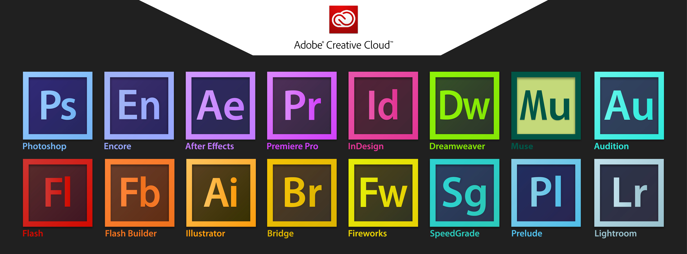

COMM 2034- Visual Media
Dr. Evia
COMM 2034, Visual Media, is a very important class for my semester. While only a 2000 level course, the classs provides a challenging yet rewarding experience with Adobe software and basic HTML web design. Throughout the course, students learn how to use InDesign, Photoshop, which was expecially fun, Premiere, and HTML design. Through this, I have learned how to utilize these applications for different projects that I will be able to carry through to my future in the PR industry.
